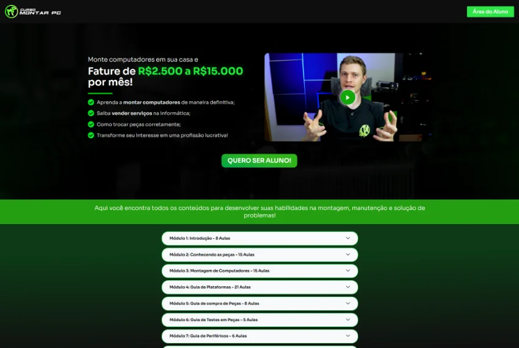
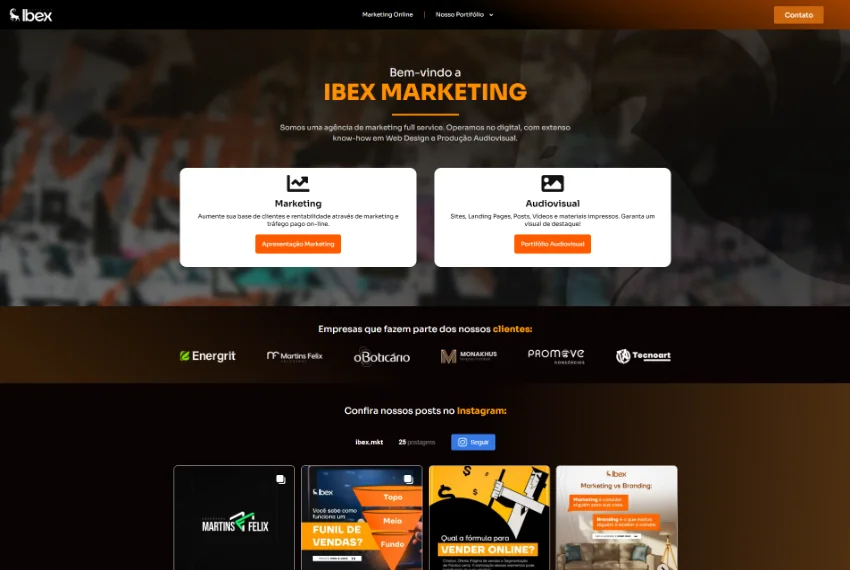
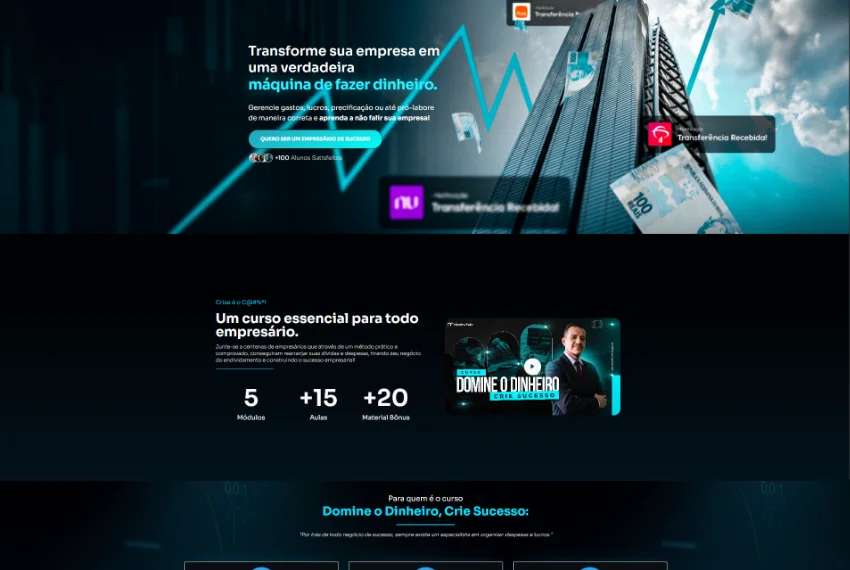
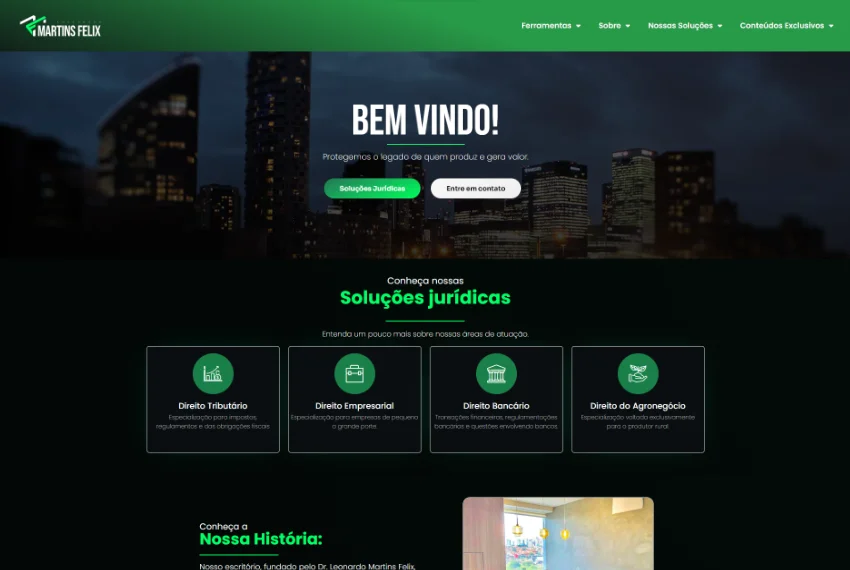
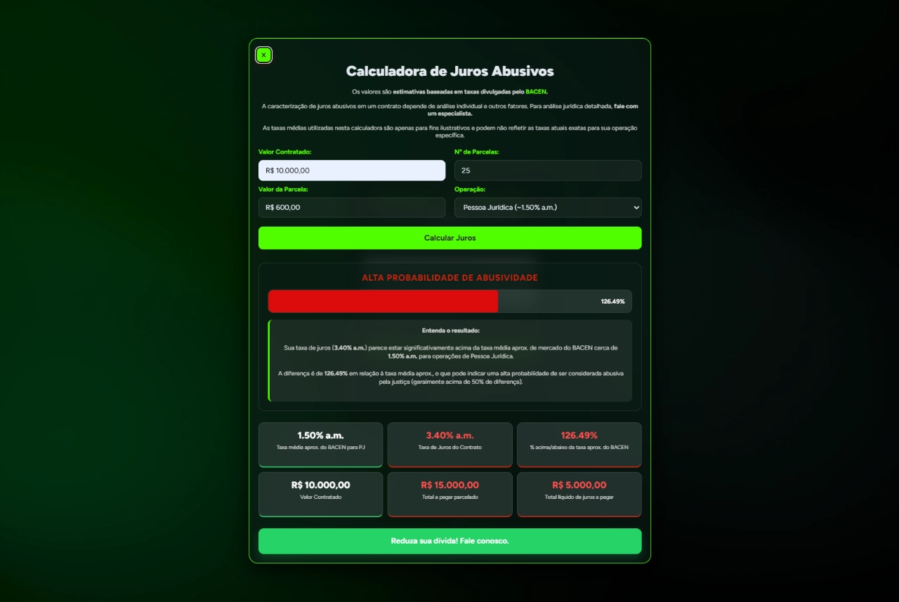
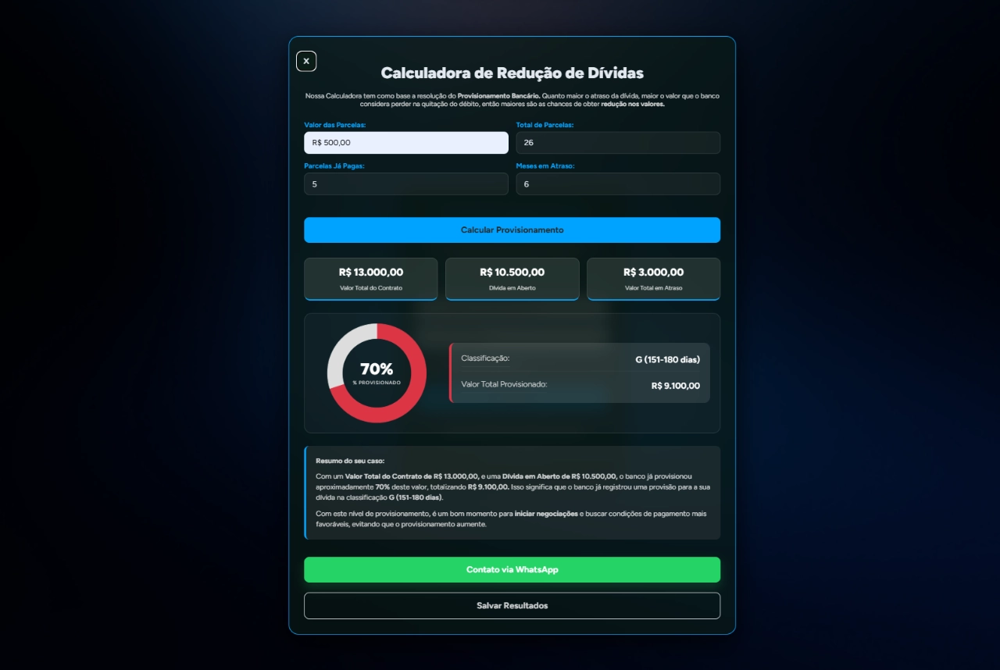
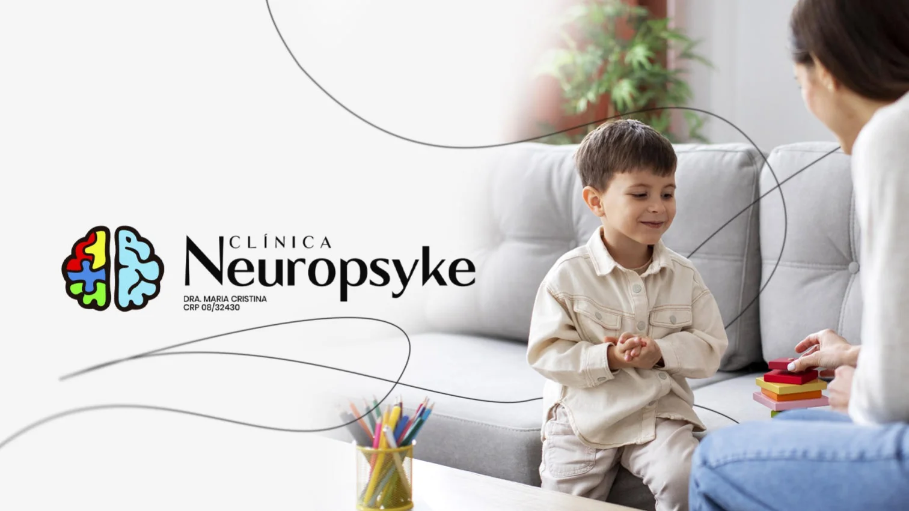

Cristian Sandri
Desenvolvedor, Designer Gráfico
Desenvolvedor, Designer Gráfico
5 anos de experiência em criação visual e produção de conteúdo digital. 2
anos de experiência com marketing.
A um ano estudo desenvolvimento front-end com foco inicial em HTML, CSS e
JavaScript. Git e Github para versionamento.
Nesse período fiz algumas landing pages e ferramentas em parceria com algumas empresas.

Desenvolvimento de Landing Page para o curso Monte seu PC, do canal Tecnoart. Reformulação geral da página feita com Wordpress + Elementor.

Desenvolvimento de site institucional e portifólio para a agencia Ibex Marketing. Site feito com Wordpress + Elementor criado desde a hospedagem, apontamento de DNS e estruturação geral.

Desenvolvimento de landing page para o curso e mentoria Domine o Dinheiro, Crie Sucesso. Site feito com Wordpress + Elementor.

Desenvolvimento de site institucional para a o escritório Martins Felix Advogados. Site feito com Wordpress + Elementor, ferramentas internas do site feitas com HTML, CSS e JavaScript.

Projeto feito para implementar em um site de um escritório de direito, calcula se um contrato tem juros acima do permitido por lei.

Calcula quantos % de uma dívida está acima do limite estipuado pelo BACEN e o quanto dela pode ser reduzido através de uma Ação de Revisão Contratual.

Projeto feito para implementar em um site de um escritório de direito, usado para complementar o SEO e gerar cliques orgânicos na página.

Projeto feito para implementar em um site de um escritório de direito, calcula a % de comprometimento da renda com dívidas relacionadas ao "mínimo existêncial".

Usei esse portifólio para reforçar varios de meus conhecimentos. Landing page feita totalmente com HTML, CSS e Javascript.

Criação de identidade visual para a Clínina Neuropsyke, especializada em saúde mental e psiquiatria para crianças e adultos neurodivergentes.

Criação de identidade visual para o centro equestre Rancho Alegre, um centro de tratamento com equinoterapia para crianças do espectro autista e com deficiencia motora.

Criação de identidade visual e assets para o curso Venda Facil, do canal Tecnoart, que ensina como comprar, consertar e revender computadores.

Criação de identidade visual para o Advogado Dr. Mateus Bellaver, especialista em direito civil e penal

Criação de identidade visual para a agência Ibex Marketing. Agência focada em tráfego pago online e social media.
Criação de identidade visual para o escritório de contabilidade Monakhus, especialista em tributação e contabilidade empresarial.

Criação de identidade visual, e manual de marca para o escritório Martins Felix Advogados, escritorio especialista em direito bancário, empresarial e agrícola

Criação de identidade visual para o salão de design de unhas e estética feminia Ju Neves Nail Design

Criação de identidade visual para marca de roupas masculinas Verit Men's Wear.

Artes para redes sociais da Clínica Neuropsyke.

Artes para redes sociais da Agência Ibex Marketing.

Artes para redes sociais e flyers da Promove Consórcios.

Artes para redes sociais das Lojas Vetor Norte de MG da Boticário.

Artes para redes sociais do escritório de Contabilidade Monakhus.

Artes para redes sociais do escritório de Advocacia Martins Felix Advogados.
Feito por Cristian Sandri © 2026